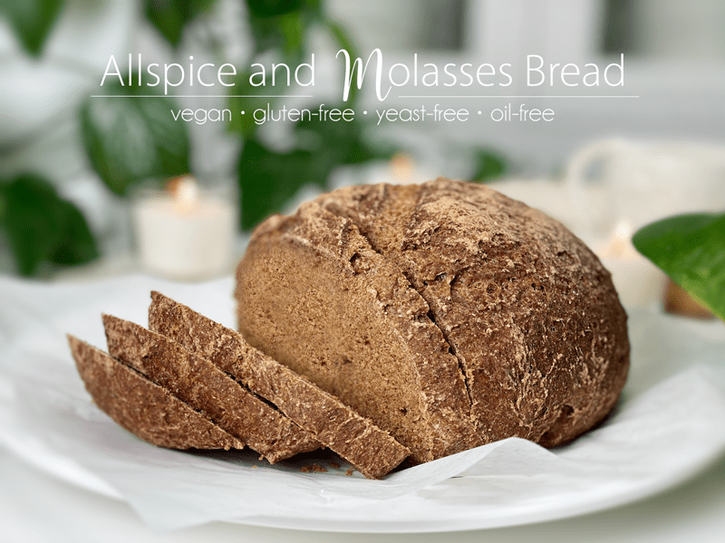
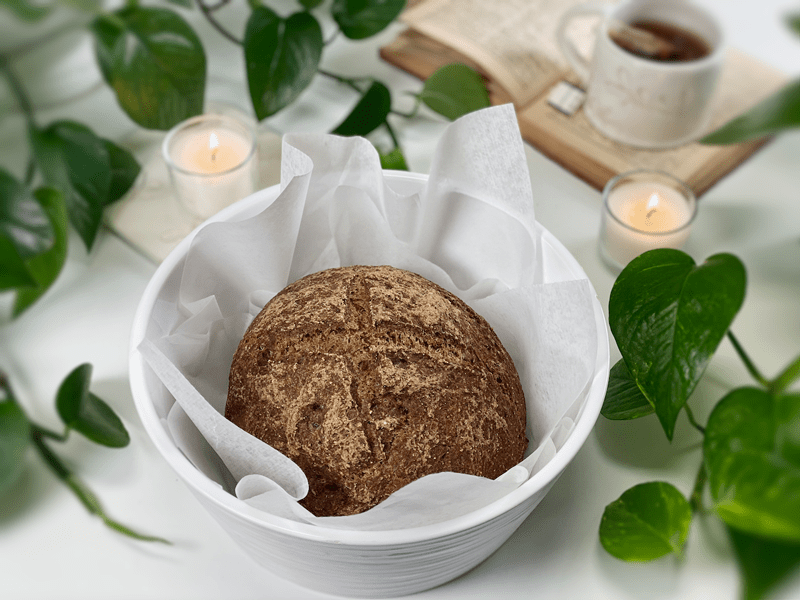
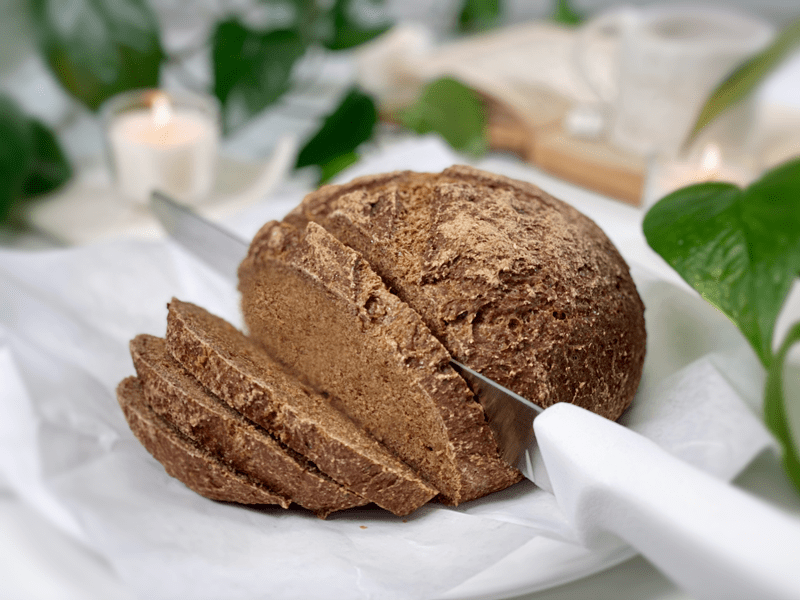
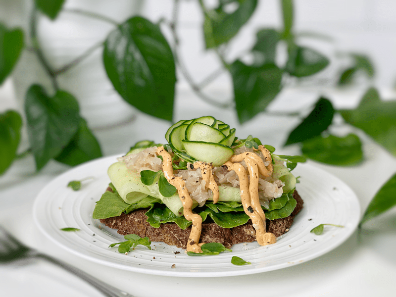
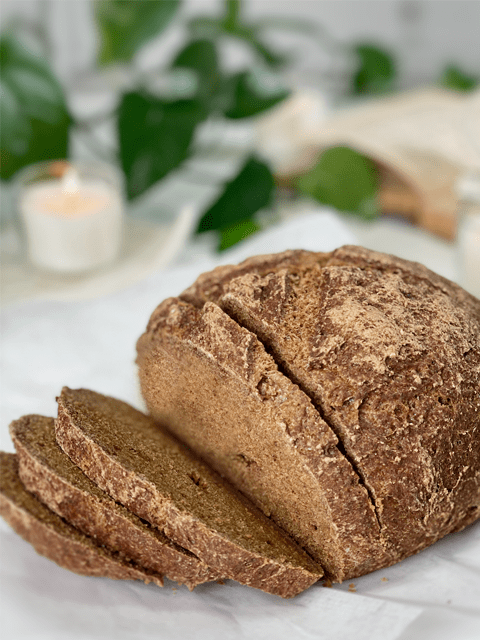

Allspice Molasses Bread | Baked | Vegan | Gluten-Free | Oil-Free
Have you ever made bread in a Dutch oven? By using a covered Dutch oven with this wet dough, the all-important steam is trapped inside, surrounding the loaf. This keeps the crust soft and cool longer, allowing the loaf to grow before the crust sets. This method isn’t required to make this bread, but it sure adds to the experience, so if you have one — use it! This bread turned out to be a stunning piece of art, and not only did it visually satisfy my loving gaze, it also made my taste buds dance with praise. Oh, that was an unintentional rhyme.

This loaf of bread is LOADED with some pretty amazing ingredients that come together to create a very nutrient-dense bread. Blackstrap molasses contains certain minerals, such as magnesium and calcium, that can help relieve menstrual cramps and constipation, help to prevent anemia, and aid in combating stress. The oats, buckwheat, sorghum flour, and psyllium are all great sources of fiber (as well as being loaded with other nutrients).
Arrowroot contains a good amount of potassium, iron, and B vitamins, which are great for metabolism, circulation, and heart health. Studies have even shown that arrowroot can boost the immune system. Allspice has carminative properties, which means it can relieve gas, bloating, and stomach upset. Now come on…how many breads have you eaten that contain so many body-loving-nutrients?

Allspice Seasoning
- The name might suggest that allspice is a blend, but it is a single spice made from dried berries of the allspice tree, which look like peppercorns.
- Allspice is a seasoning and can be found at your local grocery store, but if you don’t want to get out of your jammies and motor on down the highway, you can make your own by combining a few spices.
- To make 1 teaspoon worth, combine 1/2 teaspoon of cinnamon, 1/4 teaspoon of ground cloves, and 1/4 teaspoon of ground nutmeg.

Baking Vessel Options
Free-Form Loaf
- Bread is typically shaped round or oblong (baguette). If you want to get all fancy-sounding, a round loaf of bread is also called a boule.
- This form of bread doesn’t require a bread loaf pan. All you need is a baking/cookie sheet lined with parchment paper. Not all bread recipes work with this style of baking, but this recipe sure does.
- I prefer this style because it is more rustic and forgiving if it doesn’t come out to an exact shape.
Bread Pan Loaf
- When using a bread pan, it helps to create straight sides (think sandwich-style bread), as it constrains the bread from expanding outward.
- You can use loaf or cake pans, depending on the shape you want. Regardless of what pan you use, be sure to line it with parchment paper.
Dutch Oven Loaf
- A Dutch oven helps to mimic the environment many professional bakers have in a bakery: a moisture-sealed chamber with intense and (mostly) even radiative heat.
- The Dutch oven, with its thick cast-iron walls, offers ample thermal mass to ensure a temperature-stable baking environment.
- Additionally, the sealed interior traps steam, which is a beneficial component to baking bread. Moisture in the oven during the beginning part of baking allows your bread to rise fully, deepens the crust color, and increases the spectrum of colors on the crust.

This bread is hearty and will hold up to any sandwich fillings you throw at it. The photo above is Bob’s lunch, an open-face sammy. To complement the subtle flavors of the bread, I layered on lettuce, thinly sliced cucumbers, Caraway and Dill Sauerkraut, and a drizzle of Chipotle Lime Sauce. I have two other dressings that would be amazing with this: my Chunky Thousand Island Dressing and the Russian Salad Dressing.
Tips and Techniques
- I am a big fan of using a kitchen scale when making bread. It is easy to overmeasure flour for any recipe by as much as 30% or more! Scales are well worth the investment. To read more about the subject matter and which ones I recommend, click (here). But in the meantime, the best way to measure the dry ingredients is to spoon them into the measuring cup and level with the back of a knife.
- If you don’t mind a little oil, wipe the inside and outside of the measuring spoon when measuring out the molasses…it will glide right off when pouring it into the bowl.
The flavors in this loaf of bread are subtle. I wanted to enjoy it slice after slice in multiple ways. Slice it while warm (even though it’s best to let it cool) and you can enjoy it without one single topping on it. What’s better than a warm loaf of bread? It toasts up beautifully for breakfast, is satisfying for sandwich-making, and pairs amazingly with cream of potato soup (just saying). I hope you enjoy this recipe as much as we have. Please leave a comment below. I love hearing from you. blessings, amie sue

Ingredients
Preparation
Psyllium Gel
- Quickly whisk the water and psyllium husk powder in a mixing bowl. It will instantly start to gel, which is to be expected. Set aside while you prepare the remaining ingredients, so it can thicken.
- Preheat the oven to 350 degrees (F).
- Line a baking sheet with parchment paper, sprinkled with a little extra flour.
Dry Ingredients
- In the mixing bowl that we are going to knead the bread in, whisk together the oat flour, sorghum flour, buckwheat flour, arrowroot, baking soda, baking powder, allspice, and salt.
- If you have a sifter, use that to thoroughly incorporate all the dry ingredients; otherwise, use a whisk.
Mixing the Dough
- Add the psyllium gel and drizzle the blackstrap molasses around the bowl.
- Using either a hand mixer or a free-standing mixer with dough attachments, knead for 5 minutes (set a timer on your phone) to ensure that it gets kneaded enough (don’t we all love feeling needed?).
- Start the mixer on low until the flour is folded in, then turn it up one speed. If you start off at too high a speed, the flour will jump out of the bowl.
- Shape the dough into a round or oblong shape and place it on the baking sheet, Dutch oven, or whichever pan you decide to use.
- Score the top of the bread with the tip of a sharp knife, going no more than 1/4″ deep.
- Bake on the center rack for 50-60 minutes.
- If using the Dutch oven, look below for different baking times.
- Take the loaf out of the oven and turn it upside down. Give the bottom of the loaf a firm thump! with your thumb, like striking a drum. The bread will sound hollow when it’s done.
- When it’s done baking, slide it onto a cooling rack and wait to cut when cool.
Dutch Oven Method (if using)
- Place the empty Dutch oven and lid inside the oven and preheat the oven to 350 degrees (F).
- Once preheated and ready for baking, remove the Dutch oven and place it on the stove. Be careful not to touch the Dutch oven or lid without oven mitts because it will be hot! Place the dough on a piece of parchment paper and transfer it into the HOT Dutch oven. Cover with the hot lid and bake for 50 minutes.
- Remove hot lid and bake another 10 minutes.
- Use the parchment paper to lift the bread out of the Dutch oven and cool on a wire rack until nearly room temperature before slicing.
Storage
- Once the bread has thoroughly cooled, you can wrap it. It should last up to roughly 5 days.
- Brown paper bag: This will better protect your loaf and allow for good air circulation, meaning that your crust won’t get soft. Some people claim that a sliced loaf stored cut-side down in a paper bag will stay the freshest.
- Plastic bag: If you want to avoid staling at all costs, go with a plastic bag. Make sure to get as much air out of there as possible before sealing. Your crust will soften, but your bread won’t dry out or harden prematurely. Make up for unwanted softness with toasting.
- Tea towel: Wrap the bread in a tea towel, then place it in the bread box.
- Fridge: Whether you store it in the fridge is up to you. Many people feel that bread in the fridge turns stale quicker. If you’re not going to finish a loaf in the first few days after baking it, you might want to freeze it until you’re ready to eat it.
- Freezing: Rather than freezing the loaf as a whole, preslice it and place wax or parchment paper in between each slice before sliding it into a freezer-safe container. That way you can pull out 1,2, or as many slices as you want.
© AmieSue.com